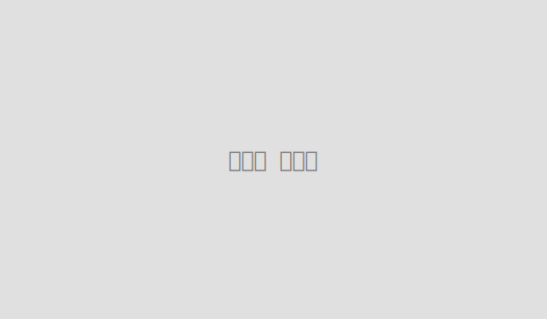

최신 블로그 글: 당신의 일상에 영감을 더하다
저희 블로그는 단순한 정보 나열을 넘어, 여러분의 삶에 진정한 가치와 영감을 제공하고자 합니다. 여행을 통해 얻는 새로운 시각, 일상 속 작은 발견에서 오는 기쁨, 그리고 생활을 더욱 편리하게 만드는 실용적인 지식까지, 다채로운 이야기를 깊이 있게 전달합니다. 매주 엄선된 주제로 발행되는 최신 글들을 통해 더 풍요로운 내일을 준비하세요!
숨 막히는 절경, 스위스 알프스 횡단기: 꿈의 하이킹 코스 추천
 자세히 읽기집에서 즐기는 미슐랭 스타 런치: 트러플 오일 파스타 레시피 대공개
특별한 날 외식을 즐기는 것도 좋지만, 때로는 집에서 고급스러운 한 끼를 직접 만들어보는 즐거움도 있습니다. 오늘은 미슐랭 레스토랑에서 맛볼 법한 '트러플 오일 파스타'를 집에서 쉽게 만드는 레시피를 소개합니다. 값비싼 재료 없이도 트러플 오일 하나로 파스타의 풍미를 극대화하는 비법과, 면 삶는 시간부터 소스 농도 조절까지 실패 없는 완벽한 파스타를 위한 모든 노하우를 담았습니다. 소중한 사람들을 위해, 혹은 자신을 위한 특별한 선물로 근사한 홈메이드 파스타를 만들어보세요.
자세히 읽기스마트한 재정 관리의 시작: '50/30/20 법칙'으로 생활비 절약하기

매달 들어오는 월급이 어디로 사라지는지 모르겠다고 느끼시나요? 효율적인 재정 관리는 어렵게 느껴질 수 있지만, '50/30/20 법칙'만 알면 누구나 쉽게 시작할 수 있습니다. 이 법칙은 수입의 50%는 필수 지출, 30%는 선택 지출, 20%는 저축 및 부채 상환에 할당하는 간단한 예산 관리 방식입니다. 본 글에서는 이 법칙의 자세한 내용과 함께, 저희 블로그의 '월 생활비 계산기'를 활용하여 여러분의 수입에 맞춰 이 법칙을 적용하는 구체적인 방법을 알려드립니다. 재정 독립을 향한 첫걸음, 지금 바로 내딛어 보세요!
자세히 읽기생활에 유용한 계산기 도구: 복잡한 계산은 이제 그만!
저희 블로그는 단순히 정보를 제공하는 것을 넘어, 여러분의 실생활에 직접적인 도움을 드리고자 다양한 '생활 계산기' 도구를 개발했습니다. 여행 경비 계획부터 매월 재정 관리, 그리고 예상 수익 시뮬레이션까지, 일상에서 필요한 복잡한 계산들을 클릭 몇 번으로 쉽고 정확하게 해결하세요. 시간을 절약하고, 더 현명한 결정을 내릴 수 있도록 저희 계산기들이 든든한 조력자가 되어 드릴 것입니다.
여행 경비 계산기: 스마트한 여행 계획의 시작
꿈꾸던 여행, 예산 때문에 막막하셨나요? 저희 '여행 경비 계산기'는 여행 일수와 하루 예상 비용만 입력하면 총 여행 경비를 자동으로 계산해 드립니다. 숙박비, 식비, 교통비, 관광 비용 등을 고려한 합리적인 예산 계획으로, 경제적인 부담 없이 오직 여행의 즐거움에만 집중할 수 있도록 도와드립니다. 이제 예산 걱정은 잊고, 완벽한 여행을 준비해보세요!
월 생활비 잔여 금액 계산기: 나의 재정 상태 한눈에 파악하기
매달 수입은 있는데 돈이 어디로 가는지 모르겠다고요? '월 생활비 잔여 금액 계산기'는 여러분의 월 수입과 지출 항목들을 입력하면 순수하게 남는 잔여 금액을 정확하게 계산해 드립니다. 불필요한 지출을 파악하고, 저축 목표를 세우며, 효율적인 재정 계획을 수립하는 데 이보다 좋은 도구는 없을 것입니다. 이제 주먹구구식 가계부 대신 스마트한 계산기로 재정 관리를 시작해보세요!
문의하기: 여러분의 소중한 의견을 기다립니다
저희 블로그 콘텐츠에 대한 궁금증, 생활 계산기 사용 중 발견된 개선사항, 혹은 협업 제안 등 여러분의 소중한 의견은 언제나 환영합니다. 블로그를 더 나은 공간으로 만들어 가는 데 큰 힘이 됩니다. 아래 양식을 통해 편하게 문의해 주세요. 모든 메시지는 꼼꼼히 읽고 최대한 빠르게 답변드리겠습니다.
문의 내용은 고객님의 이메일 프로그램을 통해 직접 'jss5591@naver.com'으로 전송됩니다.